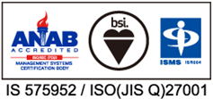

公司介紹
Company Profile
公司介紹
Company Profile
台灣分公司
| 公司名稱 | 日商思達典雅樂寶股份有限公司台灣分公司 |
|---|---|
| 公司地址 | 〒110 台北市信義區基隆路一段143號9樓之3 |
| 電話傳真 | TEL:02-2749-1971 FAX:02-2749-1963 |
| 設立日期 | 2015年1月 |
| 董監事名單 | 大島武士 |
| 事業內容 | Web應用程式的企劃、開發、銷售、維護 |
日本總公司
| 公司名稱 | startialab 株式會社 | |||||||||||||||||||||||||||||||||||||||||||||||||||||||||
|---|---|---|---|---|---|---|---|---|---|---|---|---|---|---|---|---|---|---|---|---|---|---|---|---|---|---|---|---|---|---|---|---|---|---|---|---|---|---|---|---|---|---|---|---|---|---|---|---|---|---|---|---|---|---|---|---|---|---|
| 公司地址 | 總公司 〒163-0919 東京都新宿區西新宿2-3-1新宿MONOLITH 19樓 TEL 03-5339-2105（代表號）/ FAX 03-5339-2110 大阪分店 〒530-0011 大阪府大阪市北区大深町4-20 GRAND FRONT大阪 TOWER A 17樓 TEL 06-6371-3390（代表號）/FAX 06-6371-3391 福岡分店 〒812-0016 福岡縣福岡市博多區博多驛南1-10-4 第二博多偕成大樓4樓 TEL 092-477-6100（代表號）/FAX 092-477-6105 瀧澤R＆D中心 〒020-0611 岩手縣瀧澤市巢子152-409 IPU第二創新中心2-2 （鄰接岩手縣立大學地域連攜研究棟） studio Safari 〒105-0014 東京都港區芝3-15-14 吉德大樓8樓 TEL 019-613-6545 |
|||||||||||||||||||||||||||||||||||||||||||||||||||||||||
| 設立日期 | 2009年4月1日 | |||||||||||||||||||||||||||||||||||||||||||||||||||||||||
| 資本額 | 資本額 1.5億日圓 | |||||||||||||||||||||||||||||||||||||||||||||||||||||||||
| 董監事名單 | 北村 健一 | |||||||||||||||||||||||||||||||||||||||||||||||||||||||||
| 役員構成 | 執行董事 大島武士 董事 小有康廣 董事 平岡萬葉人 社外董事 白潟敏朗 監察人 植松崇夫 |
|||||||||||||||||||||||||||||||||||||||||||||||||||||||||
| 事業內容 | Web網站的企劃、製作、顧問諮詢、營運、維護 Web應用程式的企劃、開發、銷售、維護 |
|||||||||||||||||||||||||||||||||||||||||||||||||||||||||
| ISMS認證 | STARTIA、startialab以及Crosscheck已獲認證其所有事業所均符合ISMS（資訊安全管理制度）之國際規格「ISO/IEC27001:2013」以及國內規格「JIS Q 27001:2014」要求事項。 
|
|||||||||||||||||||||||||||||||||||||||||||||||||||||||||
| PMS認證 | STARTIA、startialab以及Crosscheck已獲認證其所有事業所均符合PMS（個人資訊保護管理制度）之國內規格「JIS Q 15001:2006」要求事項。
|
|||||||||||||||||||||||||||||||||||||||||||||||||||||||||
| 沿革 |
|